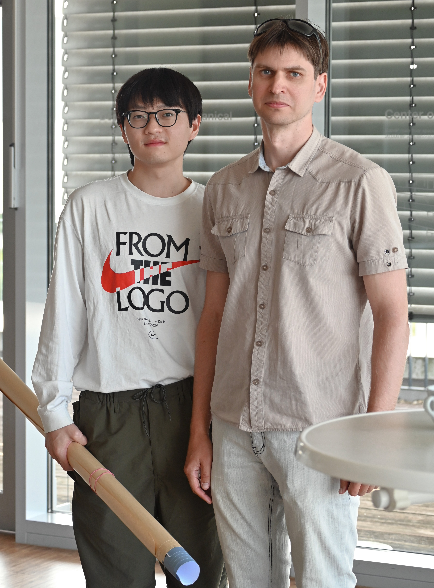
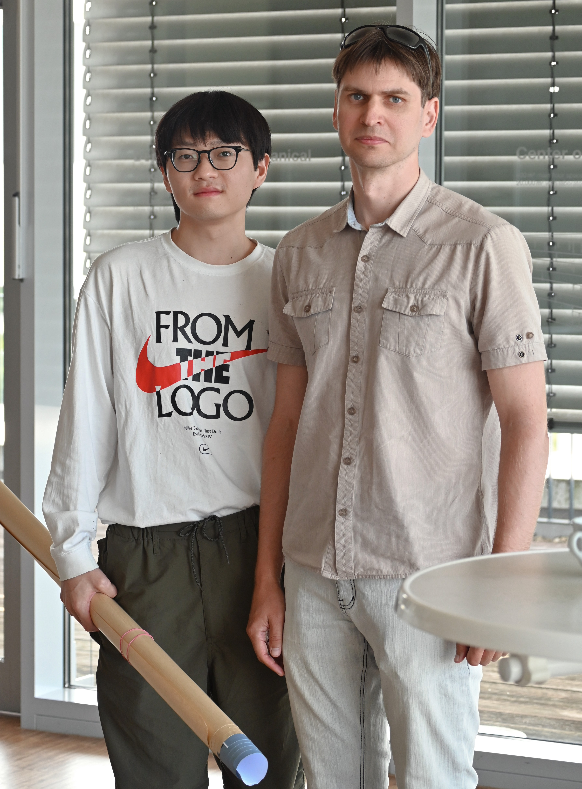

Nonadiabatic Dynamics
Surface hopping simulations of singlet–triplet dynamics, intersystem crossing and internal conversion in organic molecules.
I received my Bachelor of Science degree in Chemistry from Tangshan Normal University in 2021. From 2021,I was a PhD student in Prof.Peng group at University of Chinese Academy of Sciences(UCAS), now I am a visiting PhD student in Prof.Bokarev group at Technical University of Munich(TUM). My research mainly focused on high-throughput virtual screening of chromophores for OLED materials from a big-dataset using molecular descriptors and machine learning model.
Yu Pang
University of Chinese Academy of Sciences (UCAS)
My research centers on accelerating discovery of luminescent materials and excited-state simulations using machine learning models
Surface hopping simulations of singlet–triplet dynamics, intersystem crossing and internal conversion in organic molecules.

Graph neural networks and fingerprint-based models to predict excited-state energies and populations, and to guide materials design.
flash poster talk
 

Presented a poster on machine learning for excited-state populations. Met collaborators from different groups.

Below are small modules and scripts that I maintain. You can download the code or visit the corresponding GitHub repositories.
Python tools for analyzing fewest-switches surface hopping trajectories and computing excited-state populations.
Example notebook and scripts for training a small GIN model on molecular singlet–triplet gaps.